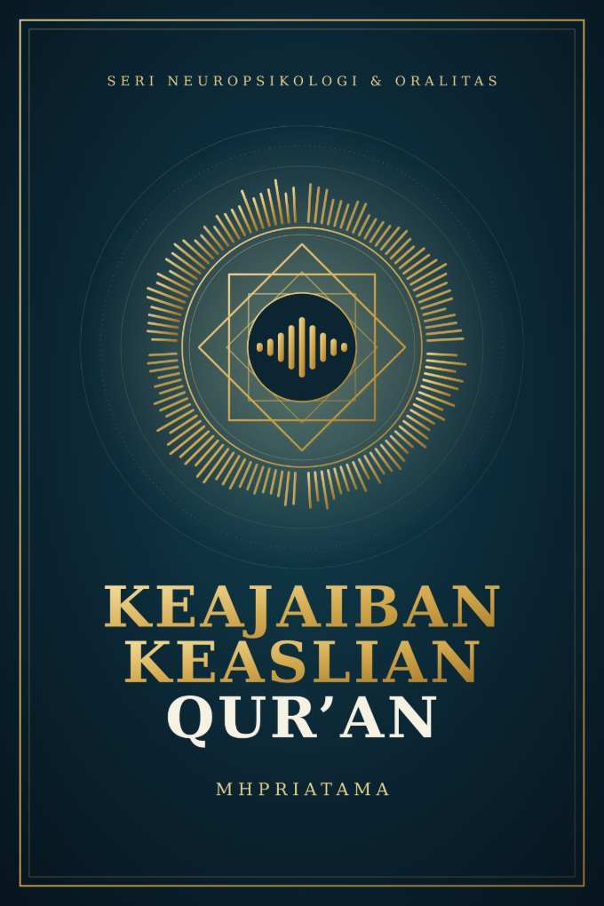

Keajaiban Keaslian Qur'an
BAGIAN PERTAMA
Misteri Kode Suara dalam Kepala
Berdasar ilmu kognitif modern, ada jenis memori terhadap lisan yang menjadi alat dokumentasi informasi ribuan tahun secara akurat dan terpercaya.

Berdasar ilmu kognitif modern, ada jenis memori terhadap lisan yang menjadi alat dokumentasi informasi ribuan tahun secara akurat dan terpercaya.
Sains kognitif modern menemukan rahasia besar tentang cara kerja memori manusia. Otak kita ternyata dirancang sebagai mesin penyimpan frekuensi suara yang sangat canggih. Informasi acak akan ditolak oleh sistem saraf jika tidak memiliki pola tetap.
Di sinilah peran penting rima dan persamaan bunyi vokal bekerja secara ilmiah. Teks lisan berirama mengaktifkan fungsi kode prediktif pada korteks prefrontal manusia. Otak depan menebak ujung kalimat berikutnya berdasarkan bunyi yang terdengar sebelumnya.
Proses tebakan alami ini memancing memori jangka panjang keluar secara otomatis. Jalur sinapsis saraf menjadi lebih kuat saat memproses teks yang memiliki nada. Akibatnya, rangkaian kalimat panjang dapat melekat kuat di dalam ingatan kita.
Kapasitas memori jangka pendek manusia memiliki batas kuantitas yang sangat ketat. Hukum Miller menyatakan otak hanya mampu menampung sedikit unit informasi sekaligus. Teks yang panjang dan monoton akan membuat sistem kognitif mengalami kelelahan.
Tradisi lisan yang unggul menyelesaikan masalah ini lewat regulasi ketukan irama. Ritme konstan memotong kalimat panjang menjadi unit-unit memori berukuran kecil. Proses pemotongan informasi ini dikenal dalam psikologi kognitif sebagai metode chunking.
Korteks auditori memproses unit kecil tersebut dengan tingkat efisiensi yang tinggi. Manusia dapat mengingat ribuan baris teks tanpa merasakan beban pikiran berlebih. Ketukan ritme bertindak sebagai jangkar yang mengunci posisi informasi dalam kepala.
Bukti bahwa dokumentasi lisan itu superior pada masa tertentu, bisa dianalisis dari sejarah. Bagaimana bisa?
Sejarah mencatat bahwa media tulisan manual memiliki cacat bawaan yang besar. Sebelum era mesin cetak, penggandaan dokumen dilakukan oleh tenaga manusia secara manual. Proses penyalinan manual ini sangat rentan terhadap faktor kelelahan kognitif.
Juru tulis zaman dahulu sering melakukan kesalahan fatal saat menyalin teks. Mereka kerap melewatkan kata, mengulang kalimat, atau mengubah arti tulisan asli. Dokumen tertulis yang cacat ini kemudian disimpan rapi di dalam perpustakaan.
Sifat dasar teks tertulis adalah pasif dan tidak bisa mengoreksi dirinya. Kesalahan salin tersebut akan dianggap sebagai kebenaran oleh generasi pembaca berikutnya. Media kertas kuno terbukti gagal menjaga keaslian data secara mutlak.
Sebaliknya, transmisi lisan yang terlembaga memiliki sistem keamanan data yang aktif. Informasi tidak disimpan di dalam ruang gelap, melainkan dideklamasikan secara terbuka. Komunitas pendengar bertindak sebagai pengawas kualitas materi yang sedang diucapkan.
Psikologi sosial menyebut fenomena unik ini sebagai sistem deteksi kesalahan instan. Jika seorang penutur salah mengucap satu huruf, irama audio akan rusak. Otak pendengar yang memegang memori serupa akan langsung menyadari keganjilan tersebut.
Koreksi massal dilakukan pada detik yang sama secara langsung di lapangan. Ruang lingkup sosial ini menutup rapat celah terjadinya distorsi informasi sejarah. Transmisi lisan kuno terbukti jauh lebih reliabel daripada lembaran kertas manuskrip.
Al-Qur'an memiliki semua superioritas dokumen lisan, sekaligus superioritas di atas semua dokumen lisan yang ada di muka bumi. Kok bisa?
Al-Qur'an secara tegas menolak disebut sebagai syair atau puisi Arab konvensional. Struktur kalimatnya tidak terikat oleh ketukan metrum puisi kuno yang kaku. Namun, ia memiliki aturan panjang pelafalan suara yang diatur sangat ketat.
Ilmu Tajwid dan pola rima akhir menghasilkan efek auditori yang dinamis. Formula rima bergeser secara adaptif dari satu surat ke surat lainnya. Perubahan pola bunyi ini merangsang pelepasan hormon dopamin di dalam otak.
Sistem saraf manusia terhindar dari efek jenuh akibat pengulangan nada monoton. Keindahan struktur linguistik ini membuat ingatan masuk jauh ke dalam korteks. Ayat-ayat suci menjadi sangat mudah dihafal oleh segala tingkat usia.
Mayoritas tradisi lisan kuno di dunia mengalami nasib tragis yang sama. Teks mereka mungkin selamat, tetapi bahasa aslinya telah punah ditelan zaman. Bahasa suci kuno bertransformasi menjadi bahasa ritual yang tidak dipahami publik.
Al-Qur'an mematahkan hukum sosiologi bahasa tersebut secara mutlak selama ribuan tahun. Kitab ini terkunci dalam bahasa Arab kuno yang strukturnya tetap hidup. Otak jutaan penghafal berhasil melakukan pembagian fungsi kognitif yang sangat luar biasa.
Mereka memakai bahasa modern lokal untuk kebutuhan komunikasi praktis sehari-hari. Di saat bersamaan, memori auditori mereka mengunci dialek abad ketujuh secara sempurna. Fenomena pemisahan bahasa ini menjaga keotentikan teks lisan hingga akhir zaman.
Seluruh rangkaian seri tulisan neuropsikologi dan keajaiban oralitas telah selesai.